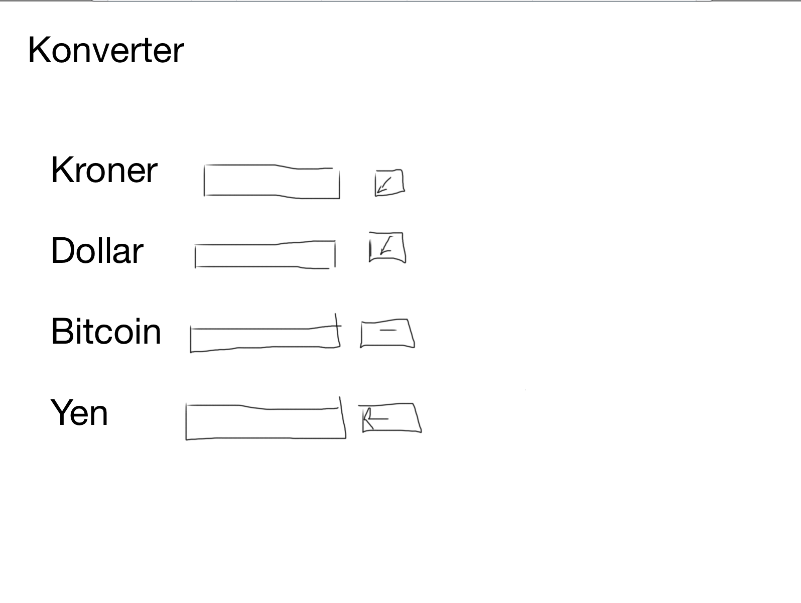
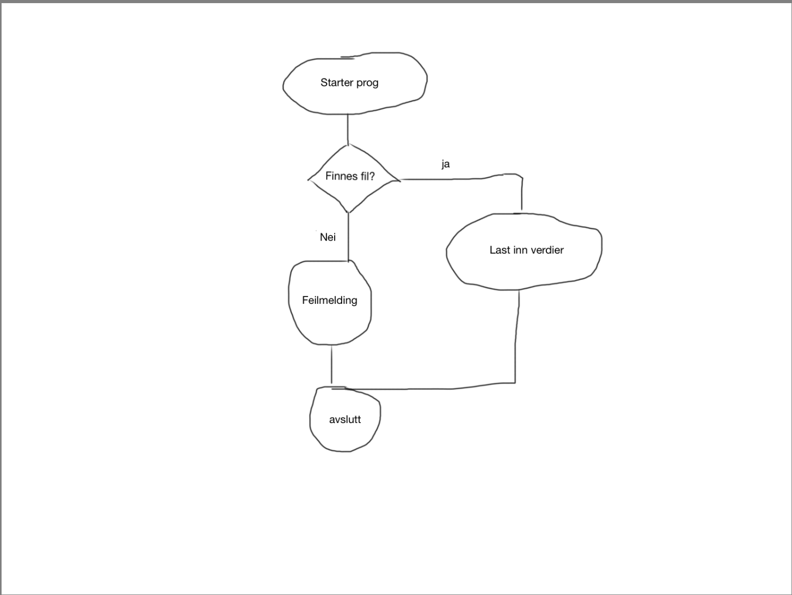
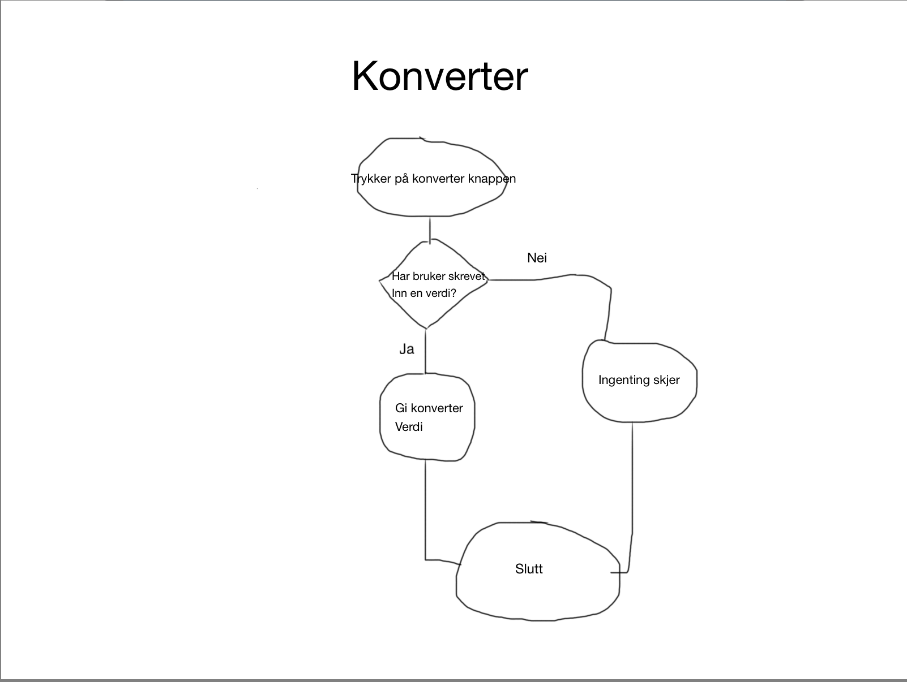

Dokumentasjon og Planlegging
Beskrivelse: Programmet skal brukes til å konverte fra en valuta til andre forskjellige valutaer.
Hensikt: Gjøre det lettere å vite verdi, ved for eksempel utenlandsreise eller
kjøp av varer med annerledes valuta.
Funksjonelle krav:
1. skrive inn en verdi
hvis krone: få verdien i dollar (senere også andre verdier)
hvis dollar: få verdien i kroner (senere også andre verdier)
hvis annen verdi: funker dessverre ikke enda, men skal funke senere
Wireframe:

FlowChart


Brukerveiledning:
Skriv inn verdi du vil konvertere.
Trykk på knapp ved siden av boks.
Få verdien.
Hva må fikses?
Må få til å kovertere fra Bitcoin og Yen, til Dollar og Kroner.
og motsatt.